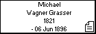
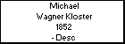

l i n k s
Children with:
Paulina Lindner
Siblings:
Catherine Wagner Krasser
Anna Wagner Krasser
Bárbara Wagner Krasser
Mathías Wagner Krasser
Paulina Wagner Krasser
Luisa Wagner Krasser
Ana B. Wagner Krasser
Miguel Wagner Krasser
Children:
Domingo Wagner Lindner
Luis Wagner Lindner
Juan Pedro Wagner Lindner
María Berta Wagner Lindner
Nélida Wagner Lindner
Rosa Wagner Lindner
Osvaldo Wagner Lindner
Atilio Wagner Lindner
Zulema Wagner Lindner
Celio Wagner Lindner
Emilia Wagner Lindner
Celestina Wagner Lindner
Pedro Wagner Krasser
Born: 1883, Argentina
Married to
Paulina Lindner
Died: Desc , Argentina
Generated by
GenDesigner 2.0 beta 3.6